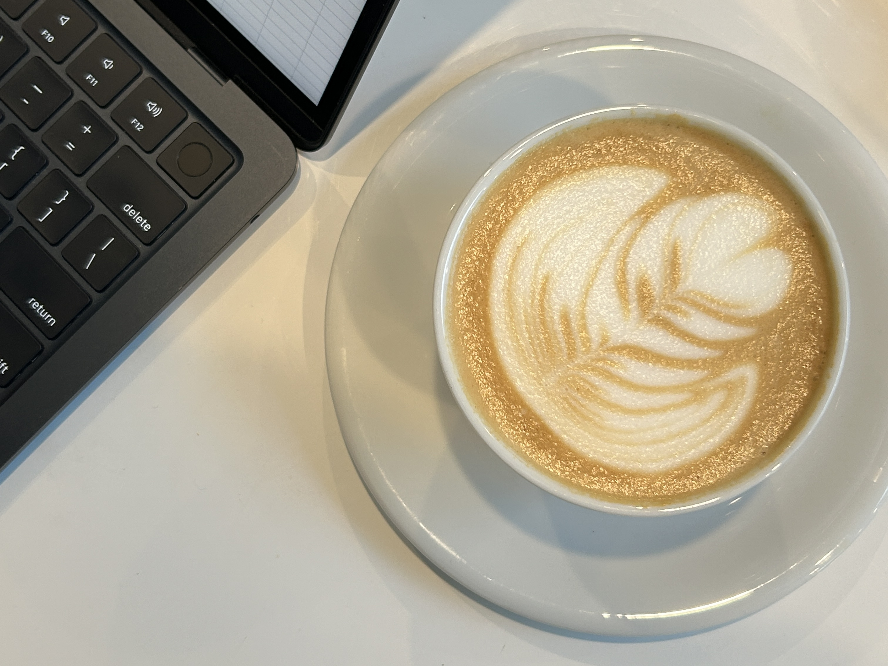

Coffee
I enjoy tasting different coffee beans, no matter expresso or pour over. Therefore, I have my own espresso machine and pour over set at home. And I am fond of collecting beans from various roasters worldwide, such as the Coffee Collective at Denmark and the Mel Coffee at Japan.
